A Novel Lidar-Assisted Monocular Visual SLAM Framework for Mobile Robots in Outdoor Environments
Jun Yin , Dongting Luo , Fei Yan , Member, IEEE, and Yan Zhuang , Member, IEEE
Abstract— In this article, a novel 3-D lidar-assisted monocular visual simultaneous localization and mapping (LAMV-SLAM) framework is proposed for mobile robots in outdoor environments. LAMV-SLAM can run in real time without a GPU and build a dense map with real scale. An online photometric calibration thread is integrated into LAMV-SLAM to eliminate the photometric disturbances in images. The tracking thread combines the lidar and vision data to estimate and refine the frame-to-frame transformation. In this thread, the depth fusion algorithm is proposed to provide accurate depth values for the extracted visual features by combining the lidar points, and a novel two-stage optimization method is proposed to utilize the fused lidar–vision data to estimate the camera transformation with the real scale. A parallel mapping thread generates new map points based on depth filter and lidar–vision data fusion. A loop closing thread further reduces the accumulative errors of the system. To verify the accuracy and efficiency of the system, we evaluated the proposed pipeline on the KITTI odometry benchmark, and our LAMV-SLAM achieves a 0.81% of relative position drift while running at over 3× real-time speed. To verify the robustness of the system in challenging environments, experiments were carried out on the North Campus Long-Term (NCLT) and NuScenes datasets. Moreover, real-world experiments were applied to our mobile robot platform to show the practicability and validity of the proposed approach.
Index Terms— Depth fusion, lidar-assisted monocular visual simultaneous localization and mapping (LAMV-SLAM), mobile robots, online photometric calibration.
I. INTRODUCTION
OBILE robots can utilize monocular visual simultaneconstruct the environment map while achieving localization in GPS-denied environments [1]. The reconstructed map is the basis for mobile robots to accomplish high-level tasks, such as autonomous navigation and obstacle avoidance [2], [3]. However, for the monocular VSLAM systems, the absolute metric scale of the reconstructed map and sensor ego-motion is inherently unobservable [4]. The scale tends to drift as the system runs for a long time. In addition, the monocular
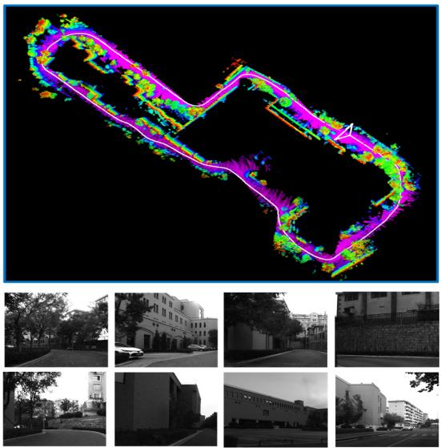
Fig. 1. Top inset shows the trajectory and reconstructed map of our campus experiment. The duration of this sequence is about 798 s, and the path length is about 750 m. The bottom insets show typical scenes of the sequence.
VSLAM systems are vulnerable when the illuminance changes or severe photometric disturbances exist in images.
To overcome the abovementioned limitations of monocular VSLAM systems for mobile robots in real-world applications, a novel 3-D lidar-assisted monocular VSLAM system named LAMV-SLAM is proposed in this article. The real scale is provided by combining visual features with 3-D lidar point clouds, and the photometric disturbances are reduced by an online photometric optimization algorithm. Fig. 1 shows the estimated camera trajectory and reconstructed map of our campus experiment. The main contributions of this article are as follows.
1) We propose a novel 3-D LAMV-SLAM framework, which allows a mobile robot to achieve real-time performance only with a CPU in large-scale environments.
2) An online photometric calibration module is integrated into LAMV-SLAM seamlessly, which significantly enhances the tracking robustness against the photometric disturbances in real-world applications.
3) To overcome the scale drift in frame-to-frame motion estimation, our two-stage motion estimation method creates and tracks temporary map points from fused lidar–vision data. The adding of these temporary map points significantly increases the number of map points used for motion estimation, and tracking these points will help reduce the scale drift of our LAMV-SLAM system since all these points have real scales given by the lidar.
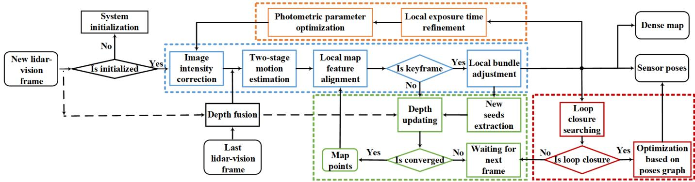
Fig. 2. Pipeline incorporates four parallel threads: photometric calibration thread in orange, tracking thread in blue, mapping thread in green, and loop closing thread in red.
II. RELATED WORKS
Monocular VSLAM and visual odometry (VO) systems have achieved impressive developments [5], [6] since the initial filtering-based approaches [7], [8]. With the perspective of sensor poses recovering methods, the VSLAM/VO systems can be divided into: direct methods [9]–[11], indirect methods [12]–[14], and semidirect methods [15]–[17].
However, the scale drift is the limitation of the monocular VSLAM/VO systems. Therefore, SLAM/odometry systems that combine the cameras and 3-D lidars are developed in recent years since the lidar point clouds provide the real scale of objects, which can eliminate the scale drift, and these systems can be divided into: 1) visual–lidar SLAM/VO systems and 2) lidar-assisted VSLAM/VO systems.
A. Visual–Lidar SLAM/Odometry Systems
These systems run both visual and lidar SLAM/VO algorithms. Zhang and Singh [18] proposed a visual–lidar odometry system named V-LOAM. In this system, the VO algorithm provides initial values of sensor poses, and a loosely coupled lidar odometry refines the map and sensor poses. Chou and Chou [19] proposed a tightly coupled visual–lidar SLAM system named TVL-SLAM++. The visual and lidar SLAM are run independently in the frontend, while all of the visual and lidar measurements are incorporated in the backend optimizations. The above systems are usually high accuracy when estimating the sensor poses. However, the real-time performance of these systems in the real-world application of mobile robots is not satisfactory, especially when the computation resources of mobile robots are limited.
B. Lidar-Assisted Visual SLAM/Odometry Systems
These systems are essentially VSLAM systems, and the lidar point clouds only provide real-scale depth estimates for visual features. The lidar-assisted VSLAM/odometry systems are easy to reach the real-time performance compared with those visual–lidar SLAM/odometry systems. VELO is a lidar-VSLAM system that utilizes a 3-D lidar and multiple cameras [20]. The ego-motion is estimated by the 3-D–3-D, 3-D–2-D, and 2-D–2-D matches. LIMO [21] is a lidarmonocular VSLAM system that utilizes an accurate depth fusion method based on patch interpolating to estimate depth values for visual features, and a semantic block is used to reject outliers, and the improved version LIMO2 achieved better performance. DEMO is an indirect VO system augmented by the depth information from a lidar sensor [22]. The features are extracted and aligned with a depth map generated by a 3-D lidar, and the bundle adjustment (BA) refines the motion estimation. DVL-SLAM is a direct-based lidar-monocular VSLAM system [23], [24]. The pipeline projects the lidar points in images, and the points with large gradient values are used to estimate the ego-motion and geometric by a direct method. Huang et al. [25] proposed a lidar-monocular VSLAM system based on point and line features, and the system integrates a point and line depth extraction method; then, the point-line BA is utilized to optimize the system.
The lidar-assisted VSLAM systems mentioned above are either pure direct or pure indirect. In contrast, our LAMV-SLAM is a semidirect system that integrates both direct and indirect methods. Due to the semidirect structure, the system runs robustly in large-scale outdoor environments by tracking a slight amount of features (200 features are enough for most cases), and our system runs in real time only with a CPU, which is suitable for mobile robots in real-world applications.
III. ALGORITHM OVERVIEW
Fig. 2 provides an overview of the proposed pipeline. Our LAMV-SLAM system consists of four parallel threads: photometric calibration, tracking, mapping, and loop closing.
The photometric calibration thread provides optimal photometric parameters (vignette, response function, and exposure change) by executing an online joint optimization on a keyframe window (see Section IV-C). Photometric calibration enables the system to run smoothly in some challenging scenes with drastic illuminance changes.
The tracking thread estimates and refines the frame-to-frame transformation and reconstructed map. The features of the last frame perform the depth fusion module, which provides the real scale depth values based on lidar scans, and the details of depth fusion are explained in Section IV-B. The system is initialized by a lidar–vision fusion method, which is explained in Section IV-D. The image intensity correction module receives the newest parameters optimized by the photometric calibration thread to correct the intensity of the new image. Then, a novel two-stage motion estimation method is proposed to estimate the frame-to-frame transformation, which is explained in Section IV-E. The local map feature alignment module aligns the points in the map with the features in the current frame, and then, the local BA further refines the sensor poses and depth values of each map point.

Fig. 3. Left block shows the original image and lidar scans. The middle block shows the RGB-D map and ordered depth map, and the height of the ordered depth map is the number of lidar rings, while the width is the number of lidar points in each ring. In the right block, the red square is the image feature and the circles are projected lidar points (blue circle: the nearest lidar neighbor to the image feature; green circles: the rest lidar neighbors). When finding lidar neighbors for the image feature, the nearest lidar neighbor (blue circle) is found in the RGB-D map first, and the rest lidar neighbors (green circles) are found in the ordered depth map.
The mapping thread generates new map points. Compound strategies are utilized to speed up the new map points creation in this thread: depth fusion, depth filter, and updating seeds with previous frames. This thread is explained in Section IV-F.
The loop closing thread searches loop closures based on Bags of Binary Words (DBoW2) [26]. Once a loop closure is found, LAMV-SLAM computes an SE3 transformation based on lidar–vision fusion, and the sensor poses are optimized based on the pose graph optimization. This thread is explained in Section IV-G.
IV. METHODOLOGY
A. Notations
The camera and lidar coordinate systems are defined as {c} and {l}, respectively, and the world coordinate system {w} is the coordinate system coinciding with {c} at the start position. The intensity image of frame k is → R, where - is the image domain. A pixel in an image is and the pixel intensity is I (u). A 3-D point in the lidar coordinate system is projected to the image pixel u by
where is the camera projection model, and is the extrinsic transformation between the lidar and camera coordinate systems. The camera transformation of the frame k and k − 1 is .
B. Depth Fusion
To provide the accurate depth values for image features by combining with the 3-D lidar points, we project the lidar points to the image to obtain the correspondences between lidar points and image features. However, the projected lidar points could hardly coincide with the image features entirely since they are sparse in images. Therefore, we proposed a novel depth fusion algorithm, which uses several adjacent lidar points to interpolate the depth values for features.
1) Lidar Points Preprocessing: As shown in Fig. 3, the lidar points are projected in the image domain by (1) to establish the RGB-D map. In the meanwhile, we further generate an ordered depth map to reorder the projected lidar points, and the height of the ordered depth map is the number of the lidar rings while the width is the number of lidar points in each ring. When a projected lidar point is recorded in the RGB-D map, the corresponding position in the ordered depth map is also calculated. In addition, the correspondence between the RGB-D map and the ordered depth map is recorded for this lidar point. Note that the distribution of the projected lidar points on the RGB-D map is sparse and disordered, while the distribution on the ordered depth map is tight and ordered.
2) Searching and Pruning Neighbors: Both the RGB-D map and the ordered depth map are used to search lidar neighbors for the visual feature. As shown in right inset of Fig. 3, we find the nearest lidar neighbor for the visual feature in the RGB-D map first, and then, we remap the nearest lidar neighbor in the ordered depth map and search the rest neighbors in the vicinity of the nearest lidar neighbor. The neighbor-searching complexity is fixed regardless of the distribution of the lidar points since the points in the ordered depth map arrange orderly and tightly. This strategy greatly speeds up the whole depth fusion algorithm. All the neighbors are pushed into different bins according to their distances to the lidar. The top two bins are extracted according to the number of neighbors. We keep all neighbors in the two bins if the indexes of the two bins are adjacent, otherwise: select the bin which keeps the most points if the numbers of points in the two bins are quite different or drop all the bins and skip this feature if the numbers of points in the two bins are similar. Rest neighbors are pruned after this process.
3) Fitting Plane and Interpolating Depth: We fit a plane with the remaining neighbors, and the normal of this plane is estimated by the principal component analysis (PCA) method. The map point observed by the camera should be the intersection of the plane and line of the camera sight, and the depth value of the corresponding image feature in the local camera coordinate system is the distance from the intersection to the camera.
C. Online Photometric Calibration
The photometric calibration corrects the image intensity to decrease the photometric disturbances caused by the vignette, exposure changes, and nonlinear response function.
The light reflected by an object in the real world is called radiance. When the object is observed by a camera, the corresponding pixel in the image is u with an intensity value I
where L is the radiance, is the vignette, is the exposure, and r is the normalized distance between the pixel and image center; is the camera response function (CRF) [27].
We aim to recover the radiance from the image intensity since the radiance is more robust than the image intensity for the direct method. Therefore, we model the vignette, exposure, and CRF, respectively, and then, the photometric calibration optimizes the best model parameters. Compared with the online photometric calibration method proposed in [27], the novelty of our work is integrating the photometric calibration module into the LAMV-SLAM system seamlessly. In contrast, the method in [27] is independent of VO/VSLAM systems, which needs extra computational cost for Kanade–Lucas–Tomasi (KLT) optical flow to obtain the feature correspondences. In our LAMV-SLAM system, the feature correspondences directly derived from the tracking thread are more reliable since these features are adequately optimized in the SLAM process. The photometric parameters are jointly optimized by a windowed optimization algorithm in real time. Moreover, the First Estimate Jacobian (FEJ) is used in the optimization to deal with the marginalization of old frames.
We utilize the optimized parameters in the photometric camera precalibration module to correct the image intensity by eliminating the effects of CRF and vignette, and the corrected intensity I of k image frame is
D. System Initialization Based on Lidar–Vision Fusion
The 2000 features are extracted in the first frame and perform the depth fusion to estimate depth values for these features. The corresponding 3-D points are created once these features are given depth values by the depth fusion module, and these features are tracked in the second frame based on an optical flow algorithm to obtain 3-D–2-D matches. The transformation between the two frames is estimated by solving the perspective-n-points (PnP) problem.
Then, the initial transformation is refined; 500 features are extracted in the second frame and perform the depth fusion to create 3-D points. These points are transformed to the first frame based on the inverse of the initial transformation to find corresponding features, and the position of each corresponding feature is refined by minimizing the corrected intensity residuals between the first and second images
where is the pixel of the projected feature in the first image, is a set of pixels around u, and is the Huber weight. A set of very accurate 3-D–2-D matches are obtained since the pixel of each feature is optimized by (4). Then, the PnP problem is solved again to refine the initialization transformation.
E. Two-Stage Motion Estimation
The two-stage motion estimation method estimates the camera frame-to-frame transformation with a real metric scale.
1) Stage I: Direct Sparse Image Alignment: When performing the frame-to-frame motion estimation, the difference between our method and pure visual methods is that our method tracks not only the map points observed by the last image but also the temporary map points created from the last lidar scan. Temporary features are extracted in the areas where no map points is imaged in the previous frame, and then, all features (including temporary and preexisting features) and the corresponding lidar points perform depth fusion to create temporary map points. If a preexisting feature is associated with both a temporary map point and a preexisting map point (map points observed in the last image), only the temporary map point is kept for the feature and the preexisting map point is excluded. The remaining preexisting map points and temporary map points are gathered in a map point set ˜s. With adding these temporary map points, the features associated with ˜s are adequate and evenly distributed, which is beneficial for the robustness of frame-to-frame motion estimation.
The frame-to-frame transformation is estimated by optimizing the intensity residuals, and the exposure parameter optimized by the photometric calibration is utilized here to overcome variations in image intensity
where is the exposure ratio of two consecutive frames. Stage I is a direct sparse method to quickly estimate the initial frame-to-frame motion.
2) Stage II: Indirect Pose Refinement: We only track the temporary map points since all these points have very accurate depth values given by the last lidar scans. Moreover, when these temporary map points are transformed to the current frame to find corresponding features, fewer cumulative errors of sensor poses are introduced. The reason is that the temporary map points are all created in the last frame, while those preexisting map points are created in older image frames. After map points are projected on the current image, we further refine each corresponding pixel by minimizing the corrected intensity residuals between the current and last image
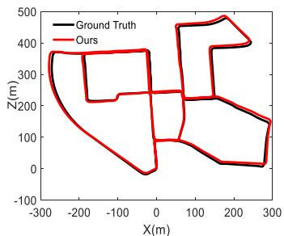
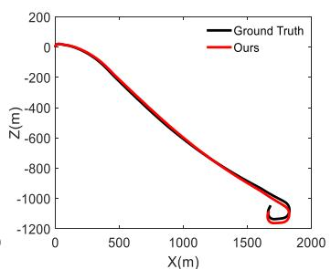
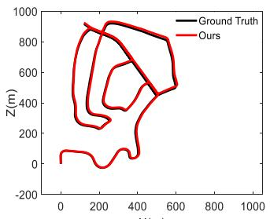
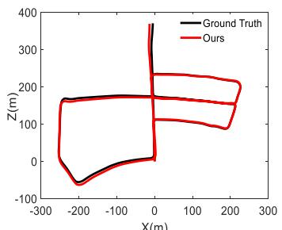
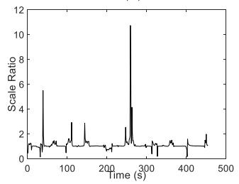
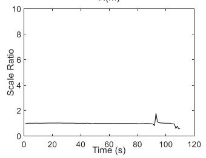
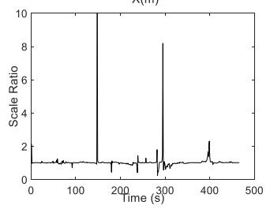
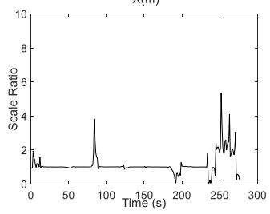
Fig. 4. Results of sequences 00, 01, 02, and 05 on the KITTI dataset. The top insets are the trajectories results of our method (red) and the ground truth (black). The bottom insets are the scale ratio between the ground truth and the estimated trajectories in each second.
Then, the frame-to-frame motion is refined by minimizing the corresponding geometric residuals
where is the temporary map point set. The scale drift is reduced significantly since the temporary map points in Stage II are all created from lidar scan with real scale.
F. Mapping
The mapping thread creates map points in the new keyframe. The new features extracted in the keyframe are called seeds, and a seed immediately evolves into a new map point once given the depth estimation value. The depth fusion is performed on seeds to extract real scale depth values from lidar scans. If the depth values are not given by the depth fusion, we adopt the depth filter in [15] to estimate the depth values for the seeds. In addition, the previous images are used to update the depth values for seeds before a new frame arrives. With the above strategies, the process of map point creation can be speeded up.
G. Loop Closing
Inspired by [28], we compute BRISK descriptors for features and search the loop closure based on DBoW2. Once a loop keyframe is searched, the lidar points in the current scan are matched to the features of the loop keyframe. Different from the pure VSLAM systems, an SE3 rather than Sim3 transformation is computed in our system since the lidar point clouds have provided the real-scale metric.
A pose graph optimization is subsequently performed to distribute the accumulative error along with all poses of keyframes in the graph. To achieve better performance, we build as many as possible connections between the neighbor keyframes of current and loop keyframes based on the number of covisible map points. Then, the sensor poses are corrected and the accumulative error of the system is reduced.
V. EXPERIMENTS
A. Performance Analysis About Accuracy and Efficiency
Experiments were performed on the KITTI dataset [29], which contains 11 sequences with accurate ground truth from GPS, and our approach is evaluated against several lidar-assisted monocular VO/VSLAM methods in terms of both accuracy and efficiency.
1) Accuracy Analysis: The top insets in Fig. 4 show the comparisons of our method with the ground truth, and the results provided here are sequences 00, 01, 02, and 05. Note that sequence 01 is a highway driving sequence, and the maximum speed is over 90 km/h. This sequence is challenging for the VSLAM method due to the large optical flow. The proposed method performed steadily even if there are 200 features in an image are extracted in our experiments. The bottom insets in Fig. 4 show the scale ratio (the ratio of lengths between the ground truth and the estimated trajectories of each second). The scale ratio values are close to 1 in most cases, which means our LAMV-SLAM framework effectively reduces the scale drift. Fig. 5 shows the estimated trajectory and reconstructed map of sequence 08. The top inset shows the whole map and trajectory of this sequence, while the bottom insets show the details of the reconstructed map.
We evaluated the translation and rotation errors (definitions of translation and rotation errors are the same as the ones in [29, Sec. 2.5]) for all 11 sequences with ground truth by dividing the entire trajectory into subsegments of 100, 200, . . . , 800 m, and we compared our method with lidar-assisted monocular VO/VSLAM methods including DEMO (2017) [22], DVL-SLAM (2020) [23], and method in [25] (2020). For the fairness of comparison, we did not turn on the close looping thread when comparing with DEMO and DVL-SLAM since they did not perform close looping either. The translation error results of each sequence are shown in Table I. It can be seen that our method achieves a 0.87% of average translation drift, which is better than DEMO (1.16%) and DVL-SLAM (0.98%), and our method performs best on seven sequences (00, 01, 04, 05, 07, 08, and 10).
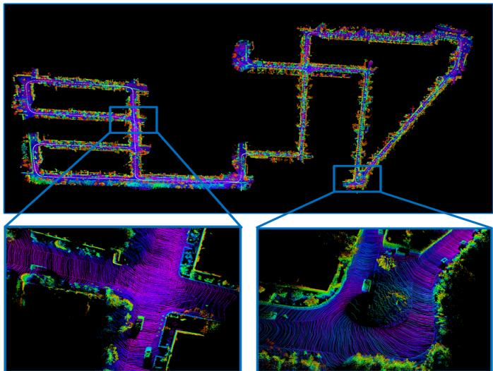
Fig. 5. Trajectory and reconstructed map of sequence 08 on the KITTI benchmark. The duration of this sequence is about 6.7 min, and the path length is over 4 km. The bottom insets show the details of the reconstructed map.
TABLE I
TRANSLATION ERROR [%] OF EACH SEQUENCE ON KITTI DATASET (WITHOUT LOOP CLOSING)
| Seq | DEMO | DVL-SLAM | Ours (without loop closing) |
| 00 | 1.05 | 0.93 | 0.84 |
| 01 | 1.87 | 1.47 | 1.02 |
| 02 | 0.93 | 1.11 | 1.00 |
| 03 | 0.99 | 0.92 | 1.01 |
| 04 | 1.23 | 0.67 | 0.67 |
| 05 | 1.04 | 0.82 | 0.65 |
| 06 | 0.96 | 0.92 | 0.99 |
| 07 | 1.16 | 1.26 | 0.84 |
| 08 | 1.24 | 1.32 | 1.19 |
| 09 | 1.17 | 0.66 | 0.80 |
| 10 | 1.14 | 0.7 | 0.55 |
| Average | 1.16 | 0.98 | 0.87 |
When comparing with the method in [25], we turn on the loop closing thread as the method in [25] did. The comparison results of translation errors for each sequence are shown in Table II. It can be seen that our method achieves a 0.81% of average translation error while the error of the method in [25] is 0.94%, and our method performs better on eight sequences (00, 01, 02, 05, 06, 08, 09, and 10).
TABLE II
TRANSLATION ERROR [%] OF EACH SEQUENCE ON KITTI DATASET (WITH LOOP CLOSING)
| Seq | Method in [25] | Ours (with loop closing) |
| 00 | 0.99 | 0.83 |
| 01 | 1.87 | 1.02 |
| 02 | 1.38 | 0.97 |
| 03 | 0.65 | 1.01 |
| 04 | 0.42 | 0.67 |
| 05 | 0.72 | 0.57 |
| 06 | 0.61 | 0.49 |
| 07 | 0.56 | 0.84 |
| 08 | 1.27 | 1.19 |
| 09 | 1.06 | 0.80 |
| 10 | 0.83 | 0.55 |
| Average | 0.94 | 0.81 |
TABLE III
AVERAGE ROTATION ERROR [deg/m] ON KITTI DATASET
| DEMO | DVL-SLAM | Method in [25] | Ours (without/with loop closing) | |
| Average | 0.0049 | 0.0040 | 0.0036 | 0.0031/0.0028 |
TABLE IV
RUNNING TIME COMPARISON ON KITTI DATASET
| DEMO | DVL | Method in [25] | Ours | |
| Fps (Hz) | 5 | 32.73 | ||
| Set up | 一 | 4 cores@2.60GHz | 6 cores@3.20GHz |
The comparison results of the average rotation error are shown in Table III. The average rotation error of our method is 0.0031 deg/m when the loop closing thread is turned off, and the error is reduced to 0.0028 deg/m when the loop closing is turned on. The rotation error of our method is smaller than DEMO, DVL-SLAM, and method in [25] whether the loop closing is turned on or not.
Fig. 6(a) and (b) shows the average translation and rotation errors of the 11 sequences on the KITTI dataset with respect to the path length, respectively, while Fig. 6(c) and (d) shows the translation and rotation errors with respect to the vehicle speed, respectively.
2) Efficiency Analysis: The comparison results of efficiency are shown in Table IV. Our method performs about 32.73 Hz on the KITTI benchmark with an Intel Core i7-8700 at 3.20 GHz and 16G RAM, which completely achieves real-time performance while the KITTI dataset is recorded at 10 Hz. The system in [25] performed about 5 Hz with the Intel Core i7-2600 at 2.6 GHz and 8G RAM [25]. For the DVL-SLAM and DEMO, no running time results is published.
As shown in Table V, we further tested the running time of the main operations of our system on the KITTI benchmark. Our LAMV-SLAM system consists of four parallel threads: photometric calibration, tracking, mapping, and loop closing. The photometric calibration thread takes about 16 ms. The tracking thread is the most time-consuming one, which integrates modules of the depth fusion, temporary map points creation (TMPC), two-stage motion estimation, local map alignment, and local BA, and the typical running time of this thread is about 29 ms. The mapping thread takes about 9 ms, while the loop closing thread takes about 18 ms.
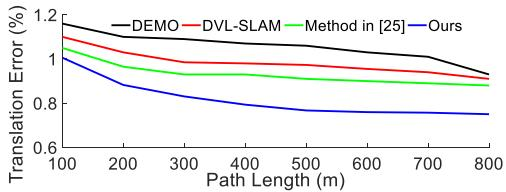
(a)
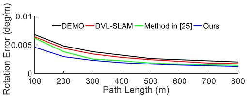
(b)
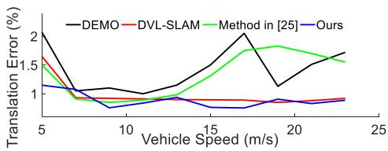
(c)
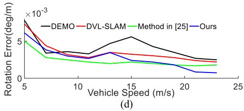
Fig. 6. Error analysis on the KITTI dataset between DEMO, method in [25], DVL-SLAM, and Ours (with loop closing). Translation errors with respect to the (a) path length and (c) vehicle speed. Rotation errors with respect to the (b) path length and (d) vehicle speed.
TABLE V
RUNNING TIME [ms] OF MAIN OPERATIONS ON KITTI DATASET
| Thread | Operation | Mean time ± standard deviation |
| Photometric calibration | Joint optimization | |
| Tracking | Depth fusion | |
| Temporary map points creation | ||
| Two-stage motion estimation | ||
| Local map alignment | ||
| Local BA | ||
| Mapping | Depth-filter | |
| New seeds extraction | ||
| Loop closing | Loop search and fusion | 8.134 ± 1.241 |
| Graph optimization |
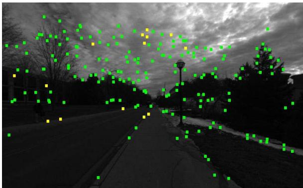
Fig. 7. Tracked features on the NCLT dataset (green: corner features; yellow: edge features). Many features are located in the sky since the weather is cloudy.
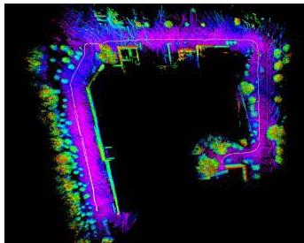
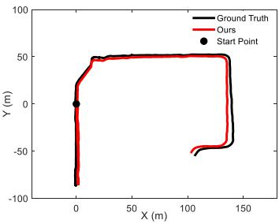
(b)
(a)
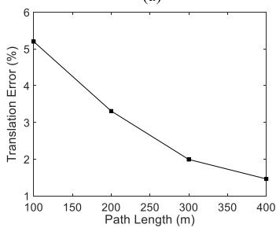
(c)
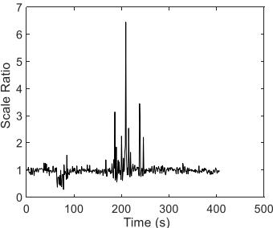
(d)
Fig. 8. Results on the NCLT training dataset. (a) Reconstructed 3-D map. (b) Trajectories of the ground truth (black) and our method (red), and the large black dot is the start point. (c) Translation error according to the path length. (d) Scale ratio between the ground truth and the estimated trajectory in each second.
B. Performance Analysis About Robustness
To verify the robustness of the system in challenging environments, we carried out experiments on the University of Michigan North Campus Long-Term (NCLT) Vision and LIDAR Dataset [30] and NuScenes datasets [31].
1) Evaluation on NCLT Dataset: A 413-s segment of sequence 2013-01-10 is tested. The main challenge of the tested sequence is the cloudy weather. As shown in Fig. 7, many extracted features are located in the sky, which is challenging for VO/VSLAM systems to keep the scale stable. We used images from the fifth camera of the Ladybug3 camera system, and the camera recorded images at 5 Hz and the exposure time was set to auto, while the lidar point clouds are recorded at 10 Hz by a Velodyne HDL-32E.
Fig. 8(a) shows the reconstructed map and trajectory. Fig. 8(b) shows the comparisons between the trajectories estimated by our LAMV-SLAM and the ground truth. Fig. 8(c) shows the translation error according to the path length, and the average translation error is 2.63%. Fig. 8(d) shows the scale ratio between the ground truth and the estimated trajectory in each second. The scale of our LAMV-SLAM is stable in most scenes even with the severe cloudy disturbances.
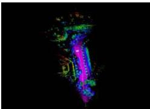
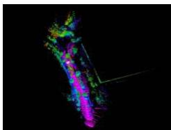
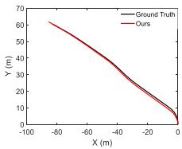
(a)
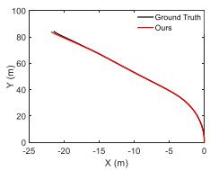
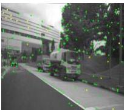
(b)
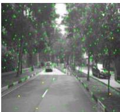
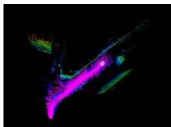
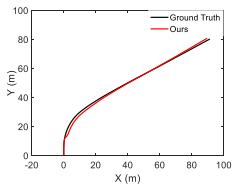
(c)
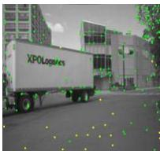
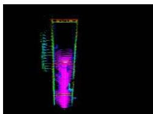
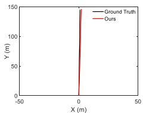
(d)
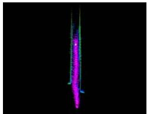
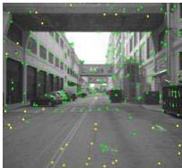
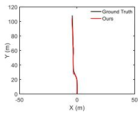
(e)
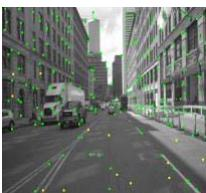
Fig. 9. Evaluation results on the NuScenes dataset. In each subfigure, the left inset shows the reconstructed maps; the middle inset shows the comparison results between our trajectories and the ground truth; the right inset shows the snapshots of experiments. (a) Scene0001: plants + building. (b) Scene0005: plants. (c) Scene0065: dynamic targets + building. (d) Scene0092: building. (e) Scene0099: high dynamic targets + building.
2) Evaluation on NuScenes Dataset: To verify the stability of our system in large optical flow scenes, we evaluated our system on the NuScenes dataset. Since the data frequency of the NuScenes dataset is low (2 Hz), the optical flow of two adjacent images is extremely large, which is especially challenging for the VSLAM systems based on the direct or the semidirect methods.
The data we evaluated are from Part I, which includes 85 sequences, and we selected five typical sequences, which can represent all the scenes of Part I. The evaluation results are shown in Fig. 9. In each subfigure of Fig. 9, the left inset shows the reconstructed maps; the middle inset shows the comparison results between our trajectories and the ground truth, and the right inset shows the snapshots of experiments. Since the trajectory length of each sequence on the NuScenes dataset is usually less than 200 m, we analyze the translation and rotation errors by dividing the path into 10, 20, . . . , 80 m. Our system achieves an average translation error of 2.25% and an average rotation error of 0.0017 deg/m. Experiments on the NuScenes dataset demonstrate that our system can still perform robustly under large optical flow motions.
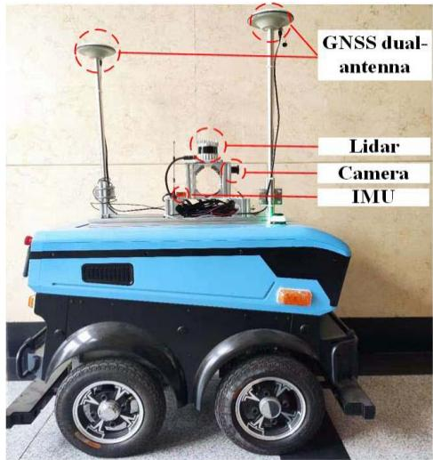
Fig. 10. Hardware composition of our mobile robot. The 3-D lidar is OUSTER OS1-32; the camera is Point Gray Chameleon3; the IMU is XSENS mti-30. The NPOS320 GNSS/INS system is also integrated into the robot.
C. Performance Analysis About Real-World Application
To verify the practicability and validity of the system in real-world applications, we carried out experiments on our campus with our self-built mobile robot. Fig. 10 shows the detailed hardware components of our self-built mobile robot platform. The robot is equipped with a 32-ring 3-D lidar, a monocular camera, and an inertial measurement unit (IMU). The global navigation satellite system (GNSS)/INS system is integrated into the robot to provide the global poses with real-time kinematic (RTK), and the RTK data are imported from Qianxun SI by a built-in 4G module and its output frequency is 1 Hz. The data of this experiment were collected on our campus. The whole sequence duration is about 798.1 s, and the length is about 749.81 m. The lidar point clouds are collected at 10 Hz, while the camera images are about 25 Hz.
Fig. 11 shows the results of the campus experiment. The black trajectory is the ground truth obtained by the GNSS/INS system, and the red trajectory is estimated by our LAMV-SLAM. The median RMSE of the keyframe trajectory is 3.665 m.
D. Ablation Studies
1) Ablation Study on Photometric Calibration: We use the data collected on our campus to illustrate the effectiveness of our photometric calibration method. Significant image intensity change occurs since frame 1310 in this experiment. Fig. 12(a) and (b) shows the tracked features of frames 1308 and 1318 when photometric calibration is turned off. More than 70% of features are lost due to the apparent intensity changes on these images. Fig. 12(c) and (d) shows the results of the same two frames when photometric calibration is turned on, and only less than 10% of features are lost. Fig. 12(e) shows the trajectory and reconstructed map when the photometric calibration is turned off, and the trajectory (red line) rapidly drifts because the system is fragile to the drastic intensity changes on images. In contrast, the trajectory with photometric calibration is smooth in the experiment, as shown in Fig. 12(f). The comparison results demonstrate that the photometric calibration method is crucial for the robustness of feature tracking in real-world applications.
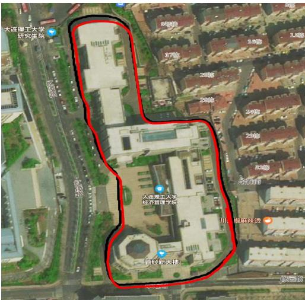
Fig. 11. Trajectories comparisons on our campus sequence. Red: Trajectory estimated by LAMV-SLAM. Black: Trajectory of the ground truth.
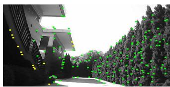
(a)
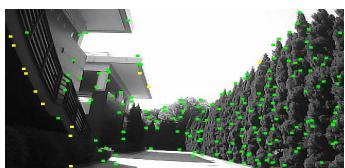
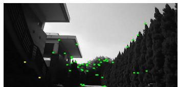
(c)
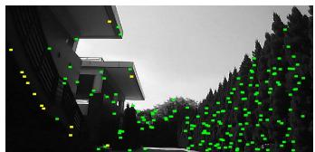
(b)
(d)
TABLE VI
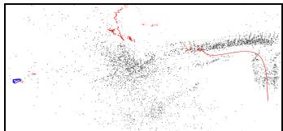
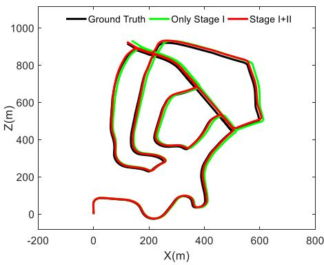
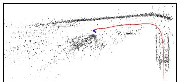
(e)
(f)
Fig. 13. Comparison results of sequence 02 on the KITTI dataset. Black: Trajectory of ground truth. Green: Trajectory of only keeping Stage I. Red: Trajectory of full two-stage motion estimation.
Fig. 12. Comparison results on our campus testing. The tracked features without photometric calibration in frames 1308 and 1318 are given in (a) and (b). Green: Corner features. Yellow: Edge features. The tracked features with photometric calibration in frames 1308 and 1318 are given in (c) and (d). (e) is the trajectory (red line) and map (black) without photometric calibration, while (f) is the one with photometric calibration.
TRANSLATION ERROR [%] WITH/WITHOUT STAGE II ON KITTI DATASET
| Seq | 00 | 01 | 02 | 03 | 04 | 05 |
| Stage I only | 1.09 | 2.15 | 1.15 | 1.48 | 0.69 | 0.98 |
| 0.84 | 1.02 | 1.00 | 1.01 | 0.67 | 0.65 |
| Seq | 06 | 07 | 08 | 09 | 10 | average |
| 1.31 | 1.09 | 1.33 | 1.07 | 0.92 | 1.21 | |
| 0.99 | 0.84 | 1.19 | 0.80 | 0.55 | 0.87 |
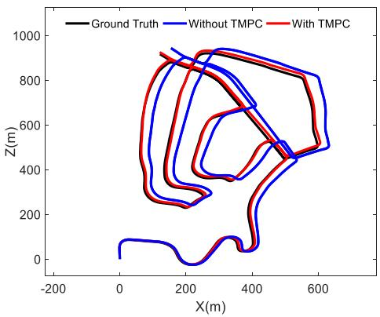
Fig. 14. Comparison results of sequence 02 on the KITTI dataset. Black: Trajectory of the ground truth. Blue: Trajectory without TMPC. Red: Trajectory with TMPC.
2) Ablation Study on Two-Stage Motion Estimation: We evaluate the performance of the two-stage motion estimation on all sequences of the KITTI dataset. Due to the limitation of pages, we only selected one sequence (Sequence 02) to display in this article. Fig. 13 shows the comparison results of sequence 02 when Stage II is turned on and off. The translation error results of each sequence are shown in Table VI. When Stage II is turned on, the translation error of each sequence is reduced. The average translation error is reduced from 1.21% to 0.87%, while the average rotation error is reduced from 0.0043 to 0.0031 deg/m.
We further evaluate the impact of the TMPC on our twostage motion estimation method. Fig. 14 shows the comparison results of sequence 02 with/without TMPC. The translation error results of each sequence are shown in Table VII. According to the results, when the TMPC is turned off, the average translation error is increased from 0.87% to 1.73%, while the average rotation error is increased from 0.0031 to 0.0053 deg/m, which means TMPC improves the accuracy of the frame-to-frame motion estimation.
TABLE VII
TRANSLATION ERROR [%] WITH/WITHOUT TMPC ON KITTI DATASET
| Seq | 00 | 01 | 02 | 03 | 04 | 05 |
| Without TMPC | 1.57 | 3.82 | 1.97 | 1.56 | 1.01 | 1.26 |
| With TMPC | 0.84 | 1.02 | 1.00 | 1.01 | 0.67 | 0.65 |
| Seq | 06 | 07 | 08 | 09 | 10 | average |
| Without TMPC | 1.89 | 1.56 | 1.79 | 1.47 | 1.12 | 1.73 |
| With TMPC | 0.99 | 0.84 | 1.19 | 0.80 | 0.55 | 0.87 |
VI. CONCLUSION
In this article, we proposed a real-time LAMV-SLAM system. The scale drift is reduced by the depth fusion and two-stage motion estimation methods. To decrease the photometric disturbances in images, an online photometric calibration algorithm is executed. Evaluations on the KITTI dataset show the accuracy and real-time performance of the proposed method. We carried out experiments on the NCLT and NuScenes datasets to demonstrate the robustness of the proposed LAMV-SLAM system in challenging outdoor environments, and the real-world experiments with our selfbuilt mobile robot platform verified the practicability and validity of the system in real-world applications. In our future work, we will design and integrate a semantic block into our LAMV-SLAM system to eliminate the disturbance of dynamic objects.
REFERENCES
[1] J. Al Hage, S. Mafrica, M. El Badaoui El Najjar, and F. Ruffier, “Informational framework for minimalistic visual odometry on outdoor robot,” IEEE Trans. Instrum. Meas., vol. 68, no. 8, pp. 2988–2995, Aug. 2019.
[2] X. Ban, H. Wang, T. Chen, Y. Wang, and Y. Xiao, “Monocular visual odometry based on depth and optical flow using deep learning,” IEEE Trans. Instrum. Meas., vol. 70, 2021, Art. no. 2501619.
[3] S. Chiodini, R. Giubilato, M. Pertile, and S. Debei, “Retrieving scale on monocular visual odometry using low-resolution range sensors,” IEEE Trans. Instrum. Meas., vol. 69, no. 8, pp. 5873–5889, Aug. 2020.
[4] S. H. Lee and G. De Croon, “Stability-based scale estimation for monocular SLAM,” IEEE Robot. Autom. Lett., vol. 3, no. 2, pp. 780–787, Apr. 2018.
[5] H. Strasdat, J. M. M. Montiel, and A. J. Davison, “Visual SLAM: Why filter?” Image Vis. Comput., vol. 30, no. 2, pp. 65–77, 2012.
[6] G. Klein and D. Murray, “Parallel tracking and mapping for small AR workspaces,” in Proc. 6th IEEE ACM Int. Symp. Mixed Augmented Reality, Nov. 2007, pp. 225–234.
[7] A. J. Davison, I. D. Reid, N. D. Molton, and O. Stasse, “MonoSLAM: Real-time single camera SLAM,” IEEE Trans. Pattern Anal. Mach. Intell., vol. 29, no. 6, pp. 1052–1067, Jun. 2007.
[8] J. Civera, A. J. Davison, and J. M. M. Montiel, “Inverse depth parametrization for monocular SLAM,” IEEE Trans. Robot., vol. 24, no. 5, pp. 932–945, Oct. 2008.
[9] J. Engel, V. Koltun, and D. Cremers, “Direct sparse odometry,” IEEE Trans. Pattern Anal. Mach. Intell., vol. 40, no. 3, pp. 611–625, Mar. 2018.
[10] J. Engel, T. Schöps, and D. Cremers, “LSD-SLAM: Large-scale direct monocular SLAM,” in Proc. Eur. Conf. Comput. Vis., 2014, pp. 834–849.
[11] J. Zubizarreta, I. Aguinaga, and J. M. M. Montiel, “Direct sparse mapping,” IEEE Trans. Robot., vol. 36, no. 4, pp. 1363–1370, Aug. 2020.
[12] R. Mur-Artal, J. M. M. Montiel, and J. D. Tardós, “ORB-SLAM: A versatile and accurate monocular SLAM system,” IEEE Trans. Robot., vol. 31, no. 5, pp. 1147–1163, Oct. 2015.
[13] R. Mur-Artal and J. D. Tardós, “ORB-SLAM2: An open-source SLAM system for monocular, stereo and RGB-D cameras,” IEEE Trans. Robot., vol. 33, no. 5, pp. 1255–1262, Jun. 2017.
[14] C. Campos, R. Elvira, J. J. Gómez Rodríguez, J. M. M. Montiel, and J. D. Tardós, “ORB-SLAM3: An accurate open-source library for visual, visual-inertial and multi-map SLAM,” 2020, arXiv:2007.11898.
[15] C. Forster, M. Pizzoli, and D. Scaramuzza, “SVO: Fast semi-direct monocular visual odometry,” in Proc. IEEE Int. Conf. Robot. Autom. (ICRA), May 2014, pp. 15–22.
[16] C. Forster, Z. Zhang, M. Gassner, M. Werlberger, and D. Scaramuzza, “SVO: Semidirect visual odometry for monocular and multicamera systems,” IEEE Trans. Robot., vol. 33, no. 2, pp. 249–265, Apr. 2017.
[17] S. H. Lee and J. Civera, “Loosely-coupled semi-direct monocular SLAM,” IEEE Robot. Autom. Lett., vol. 4, no. 2, pp. 399–406, Apr. 2019.
[18] J. Zhang and S. Singh, “Visual-lidar odometry and mapping: Lowdrift, robust, and fast,” in Proc. IEEE Int. Conf. Robot. Autom. (ICRA), May 2015, pp. 2174–2181.
[19] C.-C. Chou and C.-F. Chou, “Efficient and accurate tightly-coupled visual-lidar SLAM,” IEEE Trans. Intell. Transp. Syst., early access, Dec. 1, 2021, doi: 10.1109/TITS.2021.3130089.
[20] D. Lu, “Vision-enhanced lidar odometry and mapping,” M.S. thesis, Carnegie Mellon Univ., Pittsburgh, PA, USA, 2016.
[21] J. Gräeter, A. Wilczynski, and M. Lauer, “LIMO: Lidar-monocular visual odometry,” in Proc. IEEE/RSJ Int. Conf. Intell. Robots Syst. (IROS), Oct. 2018, pp. 7872–7879.
[22] J. Zhang, M. Kaess, and S. Singh, “A real-time method for depth enhanced visual odometry,” Auto. Robots, vol. 41, no. 1, pp. 31–43, Jan. 2017.
[23] Y.-S. Shin, Y. S. Park, and A. Kim, “DVL-SLAM: Sparse depth enhanced direct visual-LiDAR SLAM,” Auto. Robots, vol. 44, no. 2, pp. 115–130, Jan. 2020.
[24] Y.-S. Shin, Y. S. Park, and A. Kim, “Direct visual SLAM using sparse depth for camera-LiDAR system,” in Proc. IEEE Int. Conf. Robot. Autom. (ICRA), May 2018, pp. 1–8.
[25] S.-S. Huang, Z.-Y. Ma, T.-J. Mu, H. Fu, and S.-M. Hu, “Lidar-monocular visual odometry using point and line features,” in Proc. IEEE Int. Conf. Robot. Autom. (ICRA), May 2020, pp. 1091–1097.
[26] D. Galvez-López and J. D. Tardos, “Bags of binary words for fast place recognition in image sequences,” IEEE Trans. Robot., vol. 28, no. 5, pp. 1188–1197, Oct. 2012.
[27] P. Bergmann, R. Wang, and D. Cremers, “Online photometric calibration for auto exposure video for realtime visual odometry and SLAM,” IEEE Robot. Autom. Lett., vol. 3, no. 2, pp. 627–634, Apr. 2017.
[28] T. Qin, P. Li, and S. Shen, “VINS-mono: A robust and versatile monocular visual-inertial state estimator,” IEEE Trans. Robot., vol. 34, no. 4, pp. 1004–1020, Aug. 2018.
[29] A. Geiger, P. Lenz, and R. Urtasun, “Are we ready for autonomous driving? The KITTI vision benchmark suite,” in Proc. IEEE Conf. Comput. Vis. Pattern Recognit., Jun. 2012, pp. 3354–3361.
[30] N. Carlevaris-Bianco, A. K. Ushani, and R. M. Eustice, “University of Michigan north campus long-term vision and lidar dataset,” Int. J. Robot. Res., vol. 35, no. 9, pp. 1023–1035, Aug. 2016.
[31] H. Caesar et al., “NuScenes: A multimodal dataset for autonomous driving,” 2019, arXiv:1903.11027.
Jun Yin received the bachelor’s degree in automation from the China University of Petroleum, Beijing, China, in 2014, and the master’s degree in mechatronic engineering from the Ocean University of China, Qingdao, China, in 2017. He is currently pursuing the Ph.D. degree with the School of Control Science and Engineering, Dalian University of Technology, Dalian, China.
His research interests are in simultaneous localiza tion and mapping (SLAM) and multisensor fusion.
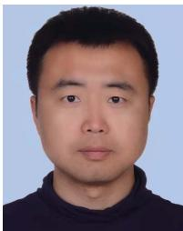
Fei Yan (Member, IEEE) received the bachelor’s and Ph.D. degrees in control theory and engineering from the Dalian University of Technology, Dalian, China, in 2004 and 2011, respectively.
He joined the Dalian University of Technology, as a Post-Doctoral Researcher in 2013 and a Lecturer in 2015, where he is currently an Associate Professor with the School of Control Science and Engineering. His current research interests include 3-D mapping, path planning, and semantic scene understanding.
Dongting Luo received the bachelor’s degree in automation from the Ocean University of China, Qingdao, China, in 2016, and the master’s degree in control theory and engineering from the Dalian University of Technology, Dalian, China, in 2019.
His research interest is in visual simultaneous localization and mapping (SLAM).
Yan Zhuang (Member, IEEE) received the bachelor’s and master’s degrees from Northeastern University, Shenyang, China, in 1997 and 2000, respectively, and the Ph.D. degree from the Dalian University of Technology, Dalian, China, in 2004, all in control theory and engineering.
He joined the Dalian University of Technology, as a Lecturer in 2005 and an Associate Professor in 2007, where he is currently a Professor with the School of Control Science and Engineering. His research interests include mobile robot 3-D mapping,
outdoor scene understanding, 3-D-laser-based object recognition, and 3-D scene recognition and reconstruction.
md/2022_A_Novel_Lidar-Assisted_Monocular_Visual_SLAM_Framework_f.md 预渲染生成。公式以 MathML 呈现，浏览器原生渲染，不依赖外部脚本或字体 CDN。